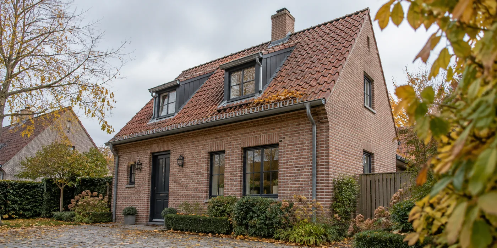
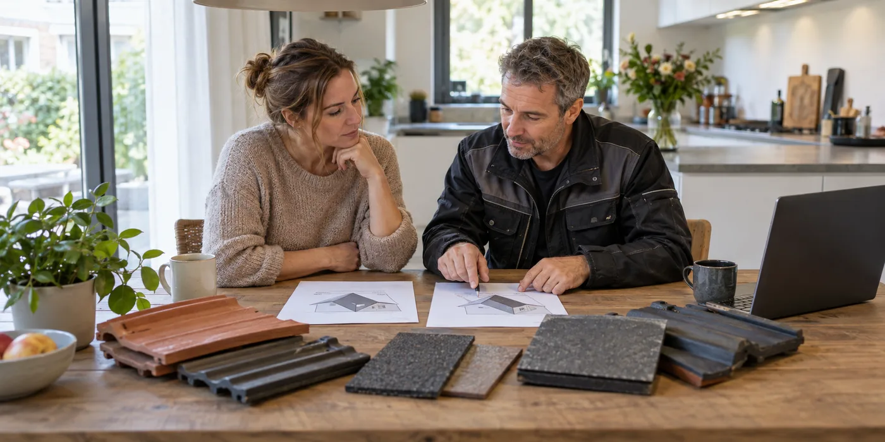
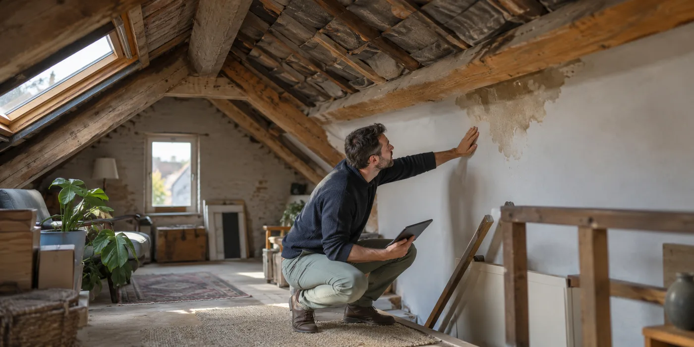
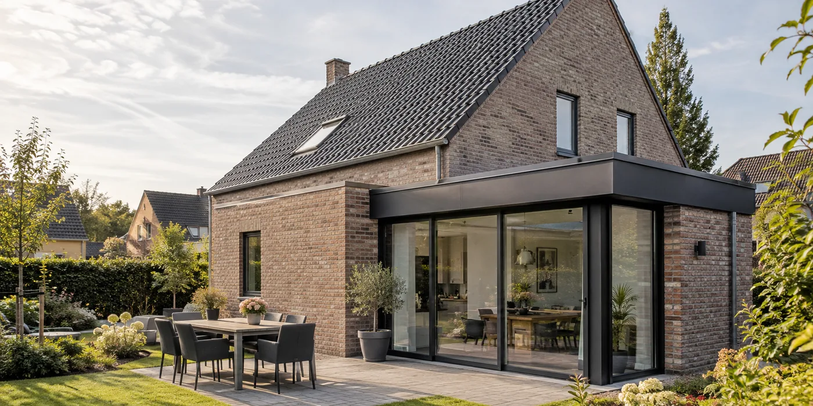
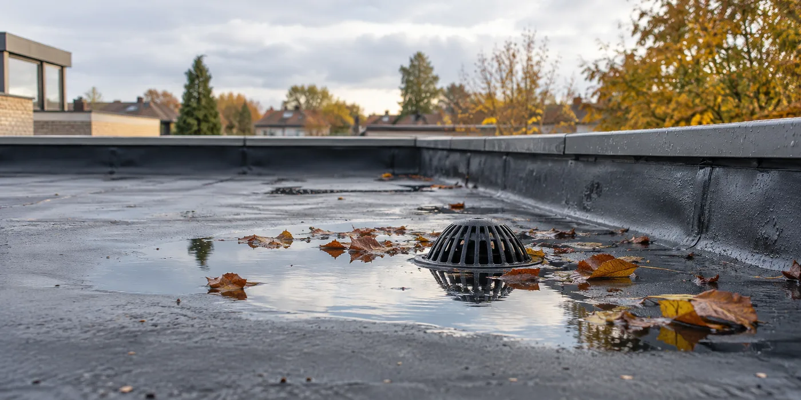
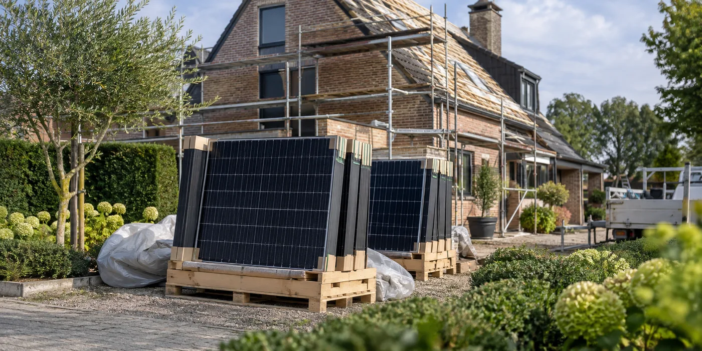
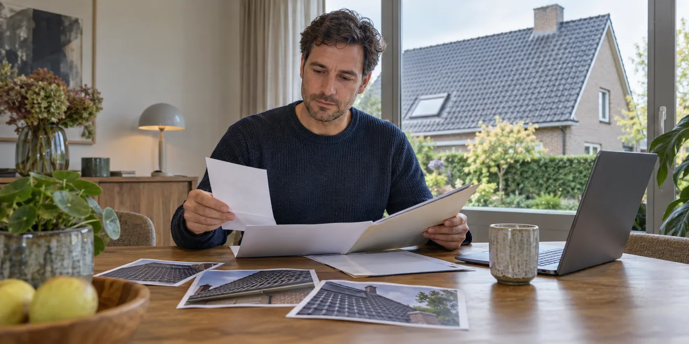

Je dak winterklaar laten nakijken: wat vraag je aan de dakwerker?
In oktober kijk je anders naar je dak dan op een droge zomerdag.
Lees de gidsDuurzaam wonen / Dakwerken
Vijf korte gidsen en vijf verdiepende artikels om jouw project beter te begrijpen en voor te bereiden.
Naar de dakwerkencalculator →
In oktober kijk je anders naar je dak dan op een droge zomerdag.
Lees de gids
Een goedkoper totaalbedrag vertelt weinig als de ene offerte alleen dakpannen bevat en de andere ook onderdak, isolatie en goten.
Lees de gids
Vocht onder het dak vraagt eerst een goede diagnose.
Lees de gids
Je wilt eerst het hoofdgebouw aanpakken en later de aanbouw.
Lees de gidsEen dakraam kan nog goed openen en toch een apart aandachtspunt zijn bij nieuwe isolatie.
Lees de gidsBij een oud leien- of golfplatendak is de materiaalnaam niet genoeg om de renovatie te plannen.
Lees de gids
Een foto van water op een plat dak roept snel vragen op.
Lees de gids
Wanneer het dak vernieuwd wordt, zijn zonnepanelen geen losse decoratie die je even opzijzet.
Lees de gidsDakwerken gebeuren boven je leefruimte.
Lees de gids
Na de laatste werkdag lijkt het belangrijkste achter de rug.
Lees de gids